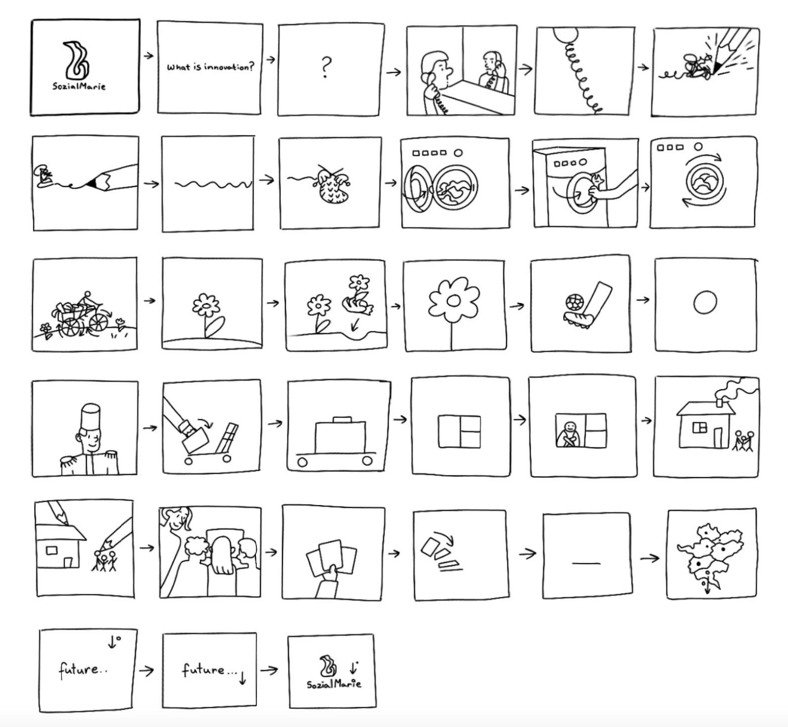
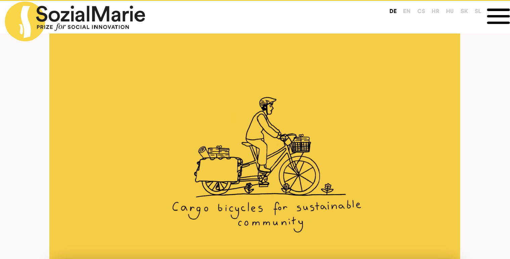

SozialMarie is a prize for social innovation that is awarded each year to 15 outstanding projects. It was the first prize for social innovation in Europe when it was first announced in 2004 and awarded in 2005. In addition to financial recognition totalling €55,000, SozialMarie primarily offers a public platform for socially innovative projects in Central Eastern Europe.

